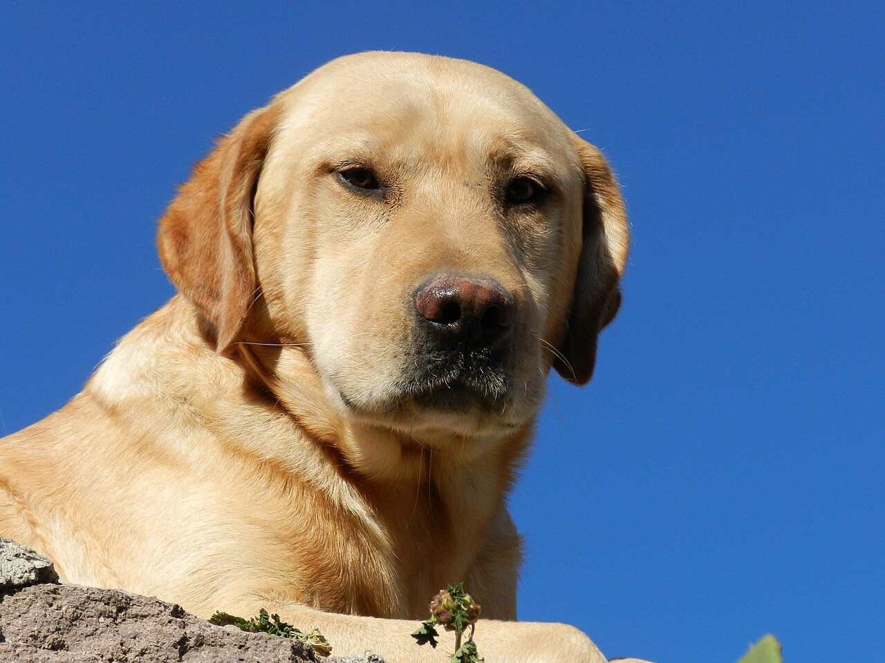
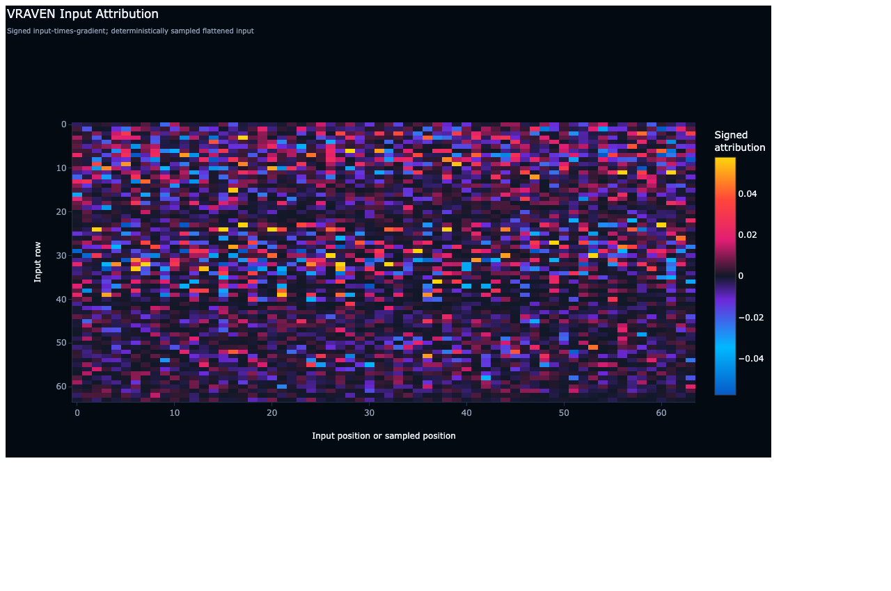
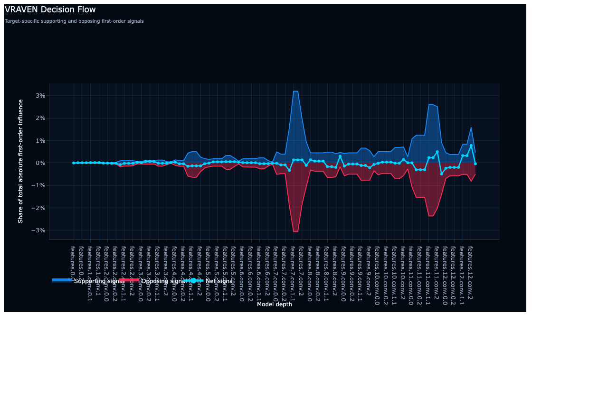
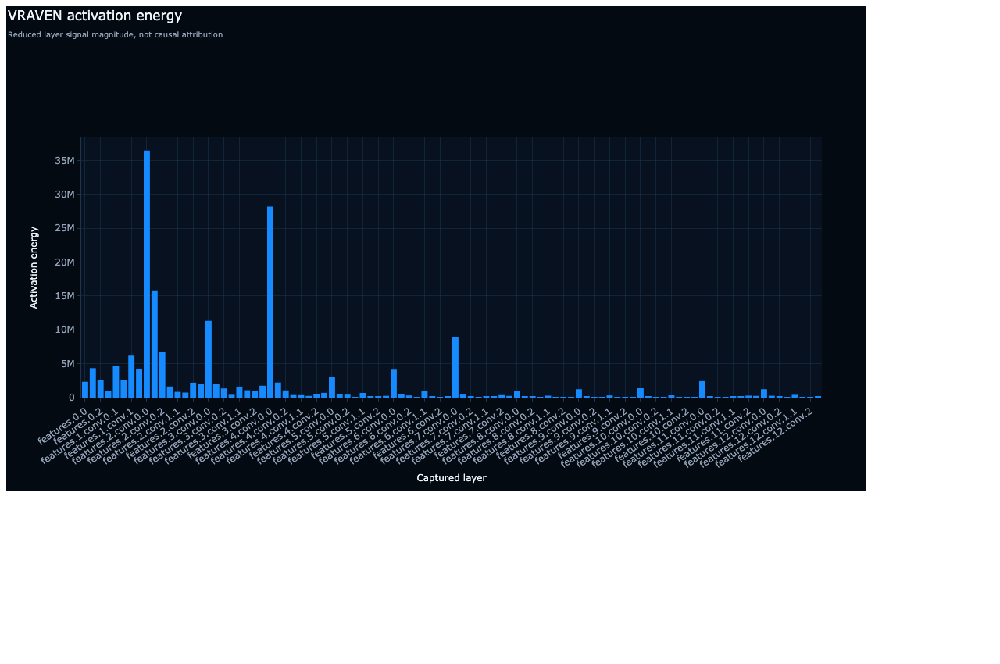
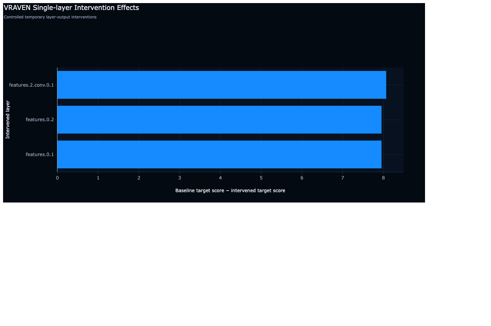
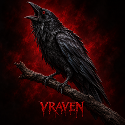

Inside a MobileNetV2 decision.
A reproducible walk from an openly licensed photograph to a prediction, internal evidence and three controlled interventions.

What did the model predict?
MobileNetV2 with the official ImageNet V2 weights assigns the image to Labrador retriever. The nearest alternatives are related dog breeds, so the prediction is plausible but not overwhelmingly certain.
Load the public model and input.
The complete script downloads the licensed image and official weights, applies the weight-defined preprocessing, predicts the target class and asks VRAVEN for causal mode. Run it from a clone of the VRAVEN repository.
python -m pip install vraven==0.10.0 torchvision
python examples/walkthroughs/mobilenet_v2_imagenet.py \
--output vraven_walkthrough_output/mobilenet_v2Core Python call
report = vraven.explain(
model,
inputs,
target=target,
mode="causal",
class_names=weights.meta["categories"],
max_layers=96,
causal_top_k=3,
)
report.write_report("vraven_report.html")Locate input influence.
VRAVEN records signed input-times-gradient evidence. Warm cells locally support the target score; cool cells oppose it. The dense image input is deterministically sampled for this compact view.

Follow supporting and opposing signals.
The decision-flow view tracks the share of absolute first-order influence through depth. Two later regions show concentrated supporting and opposing evidence rather than a smooth monotonic path.

Activity is not importance.
Activation energy reports where large signals occur. The tall early-layer peaks describe magnitude only; they do not prove that those layers caused the Labrador decision.

Change the mechanism and retest.
VRAVEN temporarily zero-ablates the three selected layer outputs and reruns the model. The strongest tested intervention, features.2.conv.0.1, moves the Labrador target logit from 7.55 to −0.52—a decrease of 8.07.

State only what this run supports.
Supported
- The model predicts Labrador retriever for this image.
- VRAVEN captured 96 named execution points.
- The three tested zero-ablations substantially reduce the target logit.
- The exact model, input and evidence mode are recorded.
Not established
- That the sampled attribution is a global feature explanation.
- That these layers are sufficient by themselves.
- That the result generalises to other Labrador images.
- That zero-ablation is the only meaningful intervention.
Take the evidence with you.
The public artefacts include the self-contained report, compact machine-readable summary and reproducible example script.

Public and reproducible. Model: torchvision MobileNetV2, IMAGENET1K_V2. Photograph: “Labrador Retriever Adulto” by Miguel Ángel Martínez González, used unchanged except browser sizing under CC BY-SA 3.0, via Wikimedia Commons.